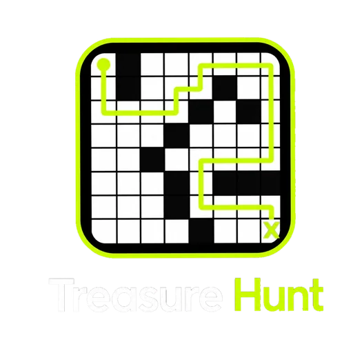

Navigate the maze
Move with the keyboard or on-screen controls. Open cells are safe to enter; walls block your way.
Race a computer-controlled agent through an 8×8 maze. Navigate open paths, avoid walls, and reach the treasure first.
The playable website brings a maze-navigation challenge to your browser. It also showcases the original Python deep Q-learning project that inspired it.

Simple to start, with a different route to solve each time.
Move with the keyboard or on-screen controls. Open cells are safe to enter; walls block your way.
A JavaScript opponent searches for a route to the treasure. You win by arriving before it does.
Choose Easy, Medium, or Hard, reset the race, or generate another maze with a valid route.
The two versions explore the same navigation problem, but they are separate implementations.
The original coursework uses a maze environment, rewards and penalties, epsilon-greedy exploration, and experience replay to explore deep Q-learning. Its notebook and supporting code are preserved in the project.
The interactive game runs without a server or neural-network training. Its opponent uses shortest-path search with difficulty-dependent timing and exploration—not the original trained Python model.
The original coursework is separate from this browser demo. You can explore its source repository and Jupyter notebook directly.
Read about the technical decisions, research, and lessons learned.